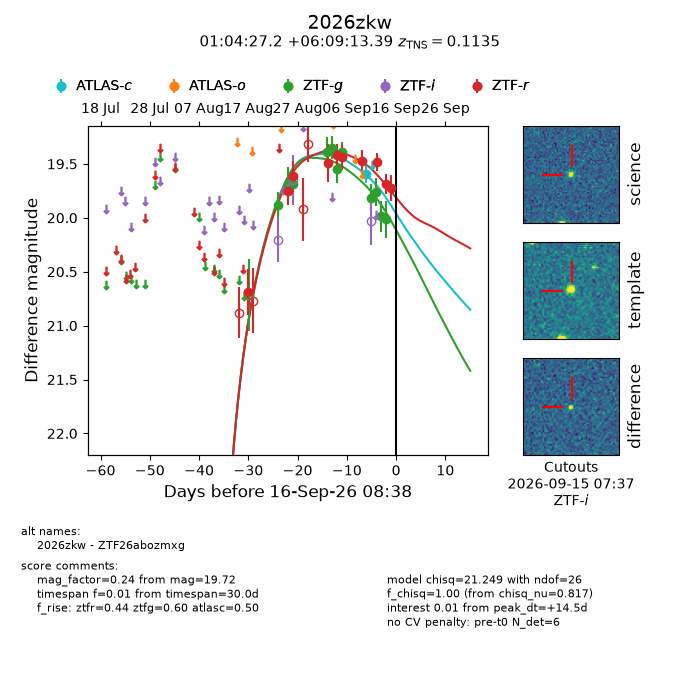
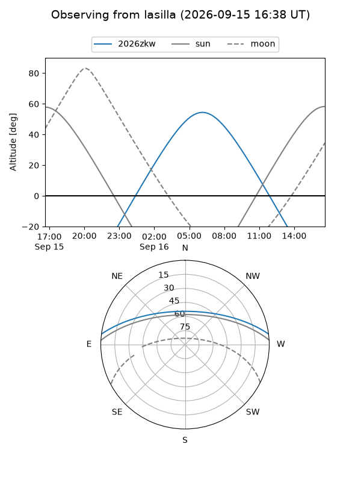
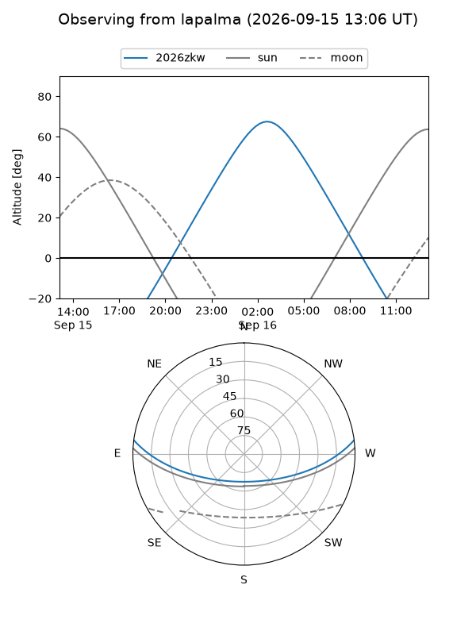
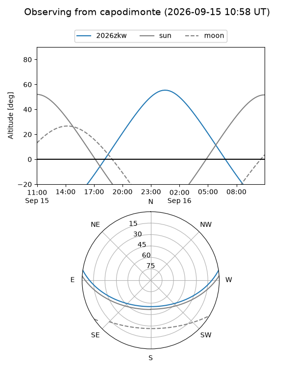
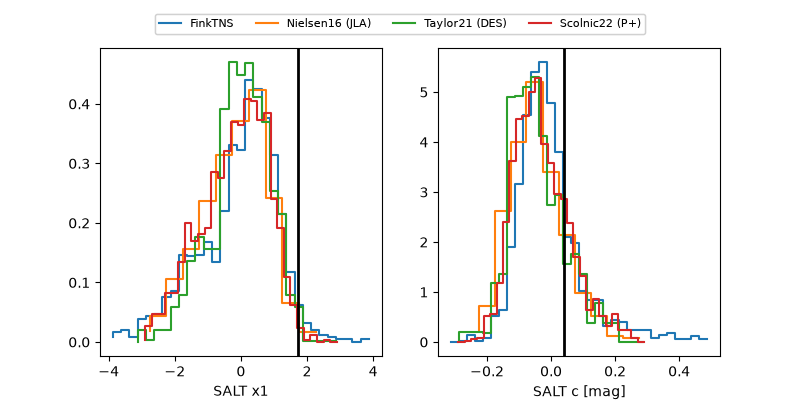

2026zkw
Target 2026zkw at 2026-09-16 08:40
Aliases and brokers:
FINK-ZTF: ztf.fink-portal.org/ZTF26abozmxg
Lasair-ZTF: lasair-ztf.lsst.ac.uk/objects/ZTF26abozmxg
ALeRCE-ZTF: alerce.online/object/ZTF26abozmxg
YSE-PZ: ziggy.ucolick.org/yse/transient_detail/2026zkw
TNS name: wis-tns.org/object/2026zkw
Direct TNS query: direct search
alt names
ZTF26abozmxg (ztf,fink_ztf)
2026zkw (tns,yse)
Coordinates:
equatorial (ra, dec) = 16.1132,+6.15372
equatorial (HMS+DMS) = 01:04:27.18,+06:09:13.39
galactic (l, b) = (128.8110,-56.56939)
Flags:
TNS type: SN Ia-91T-like
TNS redshift: 0.1135
peak dt: +14.5
Photometry:
last atlasc=19.59, ztfg=20.01, ztfr=19.72
1 atlasc, 11 ztfg, 10 ztfr detections
Lightcurve

Visibility



Additional plots
